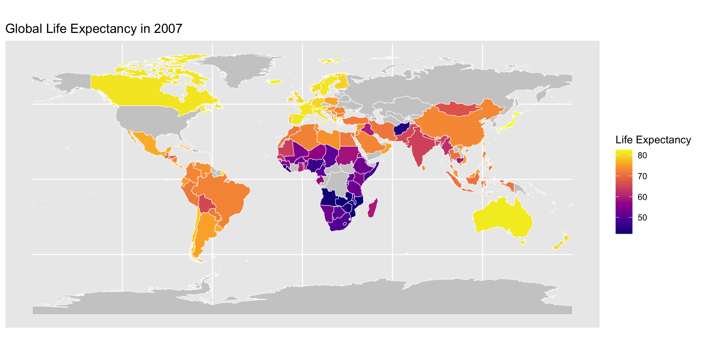
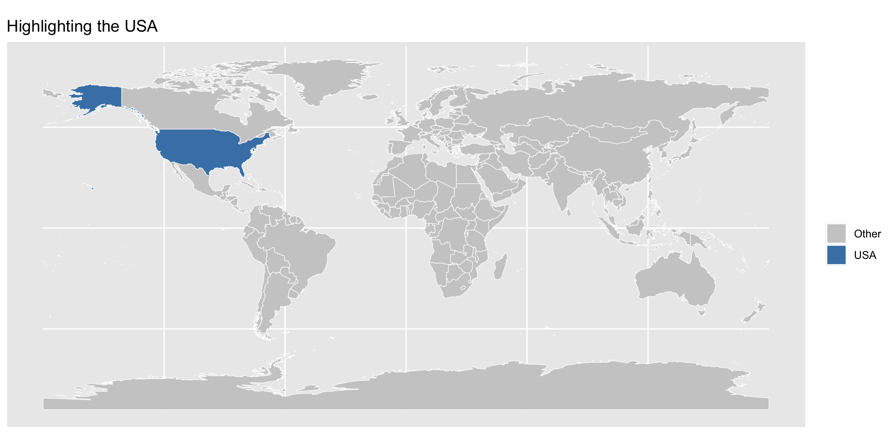
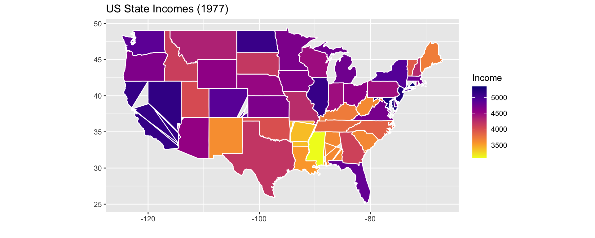
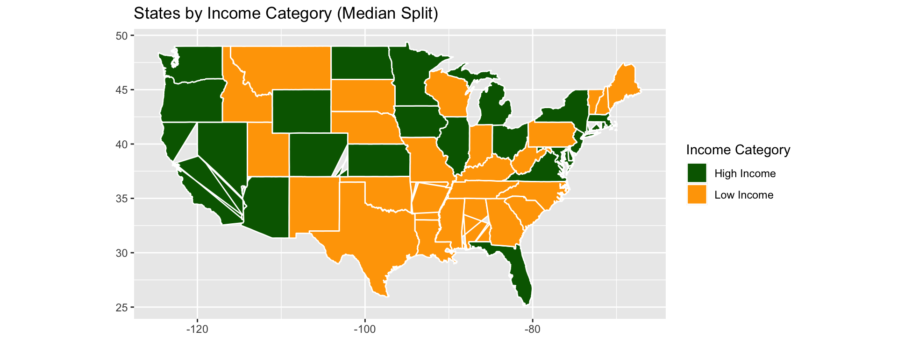
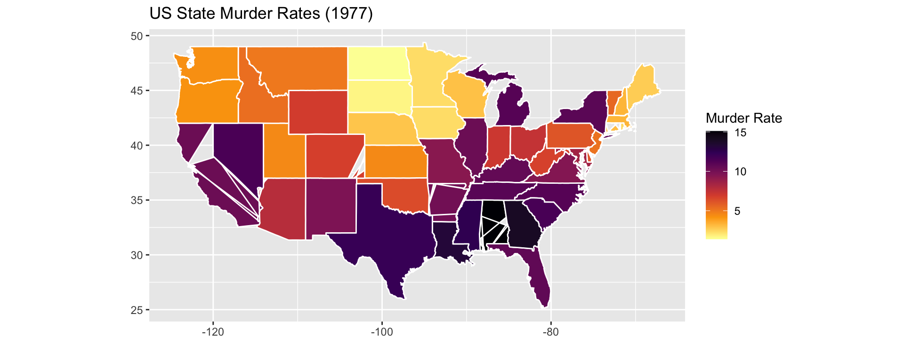

Why Maps?
Maps are crucial for EDA when dealing with geographic data. They allow us to visualize spatial patterns, regional disparities, and location-based trends.
We can combine gapminder with world map data to explore, for example, how life expectancy varies across the globe.
Getting World Map Data
We can use the rnaturalearth package to get world map polygons:
Simple feature collection with 6 features and 168 fields
Geometry type: MULTIPOLYGON
Dimension: XY
Bounding box: xmin: -73.36621 ymin: -22.40205 xmax: 109.4449 ymax: 41.9062
Geodetic CRS: WGS 84
featurecla scalerank labelrank sovereignt sov_a3 adm0_dif level
1 Admin-0 country 1 3 Zimbabwe ZWE 0 2
2 Admin-0 country 1 3 Zambia ZMB 0 2
3 Admin-0 country 1 3 Yemen YEM 0 2
4 Admin-0 country 3 2 Vietnam VNM 0 2
5 Admin-0 country 5 3 Venezuela VEN 0 2
6 Admin-0 country 6 6 Vatican VAT 0 2
type tlc admin adm0_a3 geou_dif geounit gu_a3 su_dif
1 Sovereign country 1 Zimbabwe ZWE 0 Zimbabwe ZWE 0
2 Sovereign country 1 Zambia ZMB 0 Zambia ZMB 0
3 Sovereign country 1 Yemen YEM 0 Yemen YEM 0
4 Sovereign country 1 Vietnam VNM 0 Vietnam VNM 0
5 Sovereign country 1 Venezuela VEN 0 Venezuela VEN 0
6 Sovereign country 1 Vatican VAT 0 Vatican VAT 0
subunit su_a3 brk_diff name name_long brk_a3 brk_name brk_group
1 Zimbabwe ZWE 0 Zimbabwe Zimbabwe ZWE Zimbabwe <NA>
2 Zambia ZMB 0 Zambia Zambia ZMB Zambia <NA>
3 Yemen YEM 0 Yemen Yemen YEM Yemen <NA>
4 Vietnam VNM 0 Vietnam Vietnam VNM Vietnam <NA>
5 Venezuela VEN 0 Venezuela Venezuela VEN Venezuela <NA>
6 Vatican VAT 0 Vatican Vatican VAT Vatican <NA>
abbrev postal formal_en
1 Zimb. ZW Republic of Zimbabwe
2 Zambia ZM Republic of Zambia
3 Yem. YE Republic of Yemen
4 Viet. VN Socialist Republic of Vietnam
5 Ven. VE Bolivarian Republic of Venezuela
6 Vat. V State of the Vatican City
formal_fr name_ciawf note_adm0 note_brk
1 <NA> Zimbabwe <NA> <NA>
2 <NA> Zambia <NA> <NA>
3 <NA> Yemen <NA> <NA>
4 <NA> Vietnam <NA> <NA>
5 República Bolivariana de Venezuela Venezuela <NA> <NA>
6 <NA> Holy See (Vatican City) <NA> <NA>
name_sort name_alt mapcolor7 mapcolor8 mapcolor9 mapcolor13 pop_est
1 Zimbabwe <NA> 1 5 3 9 14645468
2 Zambia <NA> 5 8 5 13 17861030
3 Yemen, Rep. <NA> 5 3 3 11 29161922
4 Vietnam <NA> 5 6 5 4 96462106
5 Venezuela, RB <NA> 1 3 1 4 28515829
6 Vatican (Holy See) Holy See 1 3 4 2 825
pop_rank pop_year gdp_md gdp_year economy
1 14 2019 21440 2019 5. Emerging region: G20
2 14 2019 23309 2019 7. Least developed region
3 15 2019 22581 2019 7. Least developed region
4 16 2019 261921 2019 5. Emerging region: G20
5 15 2019 482359 2014 5. Emerging region: G20
6 2 2019 -99 2019 2. Developed region: nonG7
income_grp fips_10 iso_a2 iso_a2_eh iso_a3 iso_a3_eh iso_n3
1 5. Low income ZI ZW ZW ZWE ZWE 716
2 4. Lower middle income ZA ZM ZM ZMB ZMB 894
3 4. Lower middle income YM YE YE YEM YEM 887
4 4. Lower middle income VM VN VN VNM VNM 704
5 3. Upper middle income VE VE VE VEN VEN 862
6 2. High income: nonOECD VT VA VA VAT VAT 336
iso_n3_eh un_a3 wb_a2 wb_a3 woe_id woe_id_eh woe_note
1 716 716 ZW ZWE 23425004 23425004 Exact WOE match as country
2 894 894 ZM ZMB 23425003 23425003 Exact WOE match as country
3 887 887 RY YEM 23425002 23425002 Exact WOE match as country
4 704 704 VN VNM 23424984 23424984 Exact WOE match as country
5 862 862 VE VEN 23424982 23424982 Exact WOE match as country
6 336 336 -99 -99 23424986 23424986 Exact WOE match as country
adm0_iso adm0_diff adm0_tlc adm0_a3_us adm0_a3_fr adm0_a3_ru adm0_a3_es
1 ZWE <NA> ZWE ZWE ZWE ZWE ZWE
2 ZMB <NA> ZMB ZMB ZMB ZMB ZMB
3 YEM <NA> YEM YEM YEM YEM YEM
4 VNM <NA> VNM VNM VNM VNM VNM
5 VEN <NA> VEN VEN VEN VEN VEN
6 VAT <NA> VAT VAT VAT VAT VAT
adm0_a3_cn adm0_a3_tw adm0_a3_in adm0_a3_np adm0_a3_pk adm0_a3_de adm0_a3_gb
1 ZWE ZWE ZWE ZWE ZWE ZWE ZWE
2 ZMB ZMB ZMB ZMB ZMB ZMB ZMB
3 YEM YEM YEM YEM YEM YEM YEM
4 VNM VNM VNM VNM VNM VNM VNM
5 VEN VEN VEN VEN VEN VEN VEN
6 VAT VAT VAT VAT VAT VAT VAT
adm0_a3_br adm0_a3_il adm0_a3_ps adm0_a3_sa adm0_a3_eg adm0_a3_ma adm0_a3_pt
1 ZWE ZWE ZWE ZWE ZWE ZWE ZWE
2 ZMB ZMB ZMB ZMB ZMB ZMB ZMB
3 YEM YEM YEM YEM YEM YEM YEM
4 VNM VNM VNM VNM VNM VNM VNM
5 VEN VEN VEN VEN VEN VEN VEN
6 VAT VAT VAT VAT VAT VAT VAT
adm0_a3_ar adm0_a3_jp adm0_a3_ko adm0_a3_vn adm0_a3_tr adm0_a3_id adm0_a3_pl
1 ZWE ZWE ZWE ZWE ZWE ZWE ZWE
2 ZMB ZMB ZMB ZMB ZMB ZMB ZMB
3 YEM YEM YEM YEM YEM YEM YEM
4 VNM VNM VNM VNM VNM VNM VNM
5 VEN VEN VEN VEN VEN VEN VEN
6 VAT VAT VAT VAT VAT VAT VAT
adm0_a3_gr adm0_a3_it adm0_a3_nl adm0_a3_se adm0_a3_bd adm0_a3_ua adm0_a3_un
1 ZWE ZWE ZWE ZWE ZWE ZWE -99
2 ZMB ZMB ZMB ZMB ZMB ZMB -99
3 YEM YEM YEM YEM YEM YEM -99
4 VNM VNM VNM VNM VNM VNM -99
5 VEN VEN VEN VEN VEN VEN -99
6 VAT VAT VAT VAT VAT VAT -99
adm0_a3_wb continent region_un subregion
1 -99 Africa Africa Eastern Africa
2 -99 Africa Africa Eastern Africa
3 -99 Asia Asia Western Asia
4 -99 Asia Asia South-Eastern Asia
5 -99 South America Americas South America
6 -99 Europe Europe Southern Europe
region_wb name_len long_len abbrev_len tiny homepart
1 Sub-Saharan Africa 8 8 5 -99 1
2 Sub-Saharan Africa 6 6 6 -99 1
3 Middle East & North Africa 5 5 4 -99 1
4 East Asia & Pacific 7 7 5 2 1
5 Latin America & Caribbean 9 9 4 -99 1
6 Europe & Central Asia 7 7 4 4 1
min_zoom min_label max_label label_x label_y ne_id wikidataid
1 0 2.5 8.0 29.92544 -18.911640 1159321441 Q954
2 0 3.0 8.0 26.39530 -14.660804 1159321439 Q953
3 0 3.0 8.0 45.87438 15.328226 1159321425 Q805
4 0 2.0 7.0 105.38729 21.715416 1159321417 Q881
5 0 2.5 7.5 -64.59938 7.182476 1159321411 Q717
6 0 5.0 10.0 12.45342 41.903323 1159321407 Q237
name_ar name_bn name_de name_en name_es
1 زيمبابوي জিম্বাবুয়ে Simbabwe Zimbabwe Zimbabue
2 زامبيا জাম্বিয়া Sambia Zambia Zambia
3 اليمن ইয়েমেন Jemen Yemen Yemen
4 فيتنام ভিয়েতনাম Vietnam Vietnam Vietnam
5 فنزويلا ভেনেজুয়েলা Venezuela Venezuela Venezuela
6 الفاتيكان ভ্যাটিকান সিটি Vatikanstadt Vatican City Ciudad del Vaticano
name_fa name_fr name_el name_he name_hi name_hu
1 زیمبابوه Zimbabwe Ζιμπάμπουε זימבבואה ज़िम्बाब्वे Zimbabwe
2 زامبیا Zambie Ζάμπια זמביה ज़ाम्बिया Zambia
3 یمن Yémen Υεμένη תימן यमन Jemen
4 ویتنام Viêt Nam Βιετνάμ וייטנאם वियतनाम Vietnám
5 ونزوئلا Venezuela Βενεζουέλα ונצואלה वेनेज़ुएला Venezuela
6 واتیکان Cité du Vatican Βατικανό קריית הוותיקן वैटिकन नगर Vatikán
name_id name_it name_ja name_ko name_nl name_pl
1 Zimbabwe Zimbabwe ジンバブエ 짐바브웨 Zimbabwe Zimbabwe
2 Zambia Zambia ザンビア 잠비아 Zambia Zambia
3 Yaman Yemen イエメン 예멘 Jemen Jemen
4 Vietnam Vietnam ベトナム 베트남 Vietnam Wietnam
5 Venezuela Venezuela ベネズエラ 베네수엘라 Venezuela Wenezuela
6 Vatikan Città del Vaticano バチカン 바티칸 시국 Vaticaanstad Watykan
name_pt name_ru name_sv name_tr name_uk name_ur
1 Zimbábue Зимбабве Zimbabwe Zimbabve Зімбабве زمبابوے
2 Zâmbia Замбия Zambia Zambiya Замбія زیمبیا
3 Iémen Йемен Jemen Yemen Ємен یمن
4 Vietname Вьетнам Vietnam Vietnam В'єтнам ویتنام
5 Venezuela Венесуэла Venezuela Venezuela Венесуела وینیزویلا
6 Vaticano Ватикан Vatikanstaten Vatikan Ватикан ویٹیکن سٹی
name_vi name_zh name_zht fclass_iso tlc_diff fclass_tlc
1 Zimbabwe 津巴布韦 辛巴威 Admin-0 country <NA> Admin-0 country
2 Zambia 赞比亚 尚比亞 Admin-0 country <NA> Admin-0 country
3 Yemen 也门 葉門 Admin-0 country <NA> Admin-0 country
4 Việt Nam 越南 越南 Admin-0 country <NA> Admin-0 country
5 Venezuela 委内瑞拉 委內瑞拉 Admin-0 country <NA> Admin-0 country
6 Thành Vatican 梵蒂冈 梵蒂岡 Admin-0 country <NA> Admin-0 country
fclass_us fclass_fr fclass_ru fclass_es fclass_cn fclass_tw fclass_in
1 <NA> <NA> <NA> <NA> <NA> <NA> <NA>
2 <NA> <NA> <NA> <NA> <NA> <NA> <NA>
3 <NA> <NA> <NA> <NA> <NA> <NA> <NA>
4 <NA> <NA> <NA> <NA> <NA> <NA> <NA>
5 <NA> <NA> <NA> <NA> <NA> <NA> <NA>
6 <NA> <NA> <NA> <NA> <NA> <NA> <NA>
fclass_np fclass_pk fclass_de fclass_gb fclass_br fclass_il fclass_ps
1 <NA> <NA> <NA> <NA> <NA> <NA> <NA>
2 <NA> <NA> <NA> <NA> <NA> <NA> <NA>
3 <NA> <NA> <NA> <NA> <NA> <NA> <NA>
4 <NA> <NA> <NA> <NA> <NA> <NA> <NA>
5 <NA> <NA> <NA> <NA> <NA> <NA> <NA>
6 <NA> <NA> <NA> <NA> <NA> <NA> <NA>
fclass_sa fclass_eg fclass_ma fclass_pt fclass_ar fclass_jp fclass_ko
1 <NA> <NA> <NA> <NA> <NA> <NA> <NA>
2 <NA> <NA> <NA> <NA> <NA> <NA> <NA>
3 <NA> <NA> <NA> <NA> <NA> <NA> <NA>
4 <NA> <NA> <NA> <NA> <NA> <NA> <NA>
5 <NA> <NA> <NA> <NA> <NA> <NA> <NA>
6 <NA> <NA> <NA> <NA> <NA> <NA> <NA>
fclass_vn fclass_tr fclass_id fclass_pl fclass_gr fclass_it fclass_nl
1 <NA> <NA> <NA> <NA> <NA> <NA> <NA>
2 <NA> <NA> <NA> <NA> <NA> <NA> <NA>
3 <NA> <NA> <NA> <NA> <NA> <NA> <NA>
4 <NA> <NA> <NA> <NA> <NA> <NA> <NA>
5 <NA> <NA> <NA> <NA> <NA> <NA> <NA>
6 <NA> <NA> <NA> <NA> <NA> <NA> <NA>
fclass_se fclass_bd fclass_ua geometry
1 <NA> <NA> <NA> MULTIPOLYGON (((31.28789 -2...
2 <NA> <NA> <NA> MULTIPOLYGON (((30.39609 -1...
3 <NA> <NA> <NA> MULTIPOLYGON (((53.08564 16...
4 <NA> <NA> <NA> MULTIPOLYGON (((104.064 10....
5 <NA> <NA> <NA> MULTIPOLYGON (((-60.82119 9...
6 <NA> <NA> <NA> MULTIPOLYGON (((12.43916 41...
Merging Gapminder Data with World Map
We need a specific year to visualize life expectancy. Let’s pick 2007 (the last year in the dataset).
We will join on country names. The world dataset uses name for countries:
Plotting a World Map of Life Expectancy
We used geom_sf() to plot spatial data and scale_fill_viridis_c() for a nice color scale.
Focusing on the United States
What if we want to focus on a single country, like the United States, for a closer EDA?
Simple feature collection with 1 feature and 173 fields
Geometry type: MULTIPOLYGON
Dimension: XY
Bounding box: xmin: -178.1945 ymin: 18.96392 xmax: 179.78 ymax: 71.40767
Geodetic CRS: WGS 84
featurecla scalerank labelrank sovereignt sov_a3 adm0_dif
1 Admin-0 country 5 2 United States of America US1 1
level type tlc admin adm0_a3 geou_dif
1 2 Country 1 United States of America USA 0
geounit gu_a3 su_dif subunit su_a3 brk_diff
1 United States of America USA 0 United States USA 0
name name_long brk_a3 brk_name brk_group abbrev
1 United States of America United States USA United States <NA> U.S.A.
postal formal_en formal_fr name_ciawf note_adm0 note_brk
1 US United States of America <NA> United States <NA> <NA>
name_sort name_alt mapcolor7 mapcolor8 mapcolor9 mapcolor13
1 United States of America <NA> 4 5 1 1
pop_est pop_rank pop_year gdp_md gdp_year economy
1 328239523 17 2019 21433226 2019 1. Developed region: G7
income_grp fips_10 iso_a2 iso_a2_eh iso_a3 iso_a3_eh iso_n3
1 1. High income: OECD US US US USA USA 840
iso_n3_eh un_a3 wb_a2 wb_a3 woe_id woe_id_eh woe_note
1 840 840 US USA 23424977 23424977 Exact WOE match as country
adm0_iso adm0_diff adm0_tlc adm0_a3_us adm0_a3_fr adm0_a3_ru adm0_a3_es
1 USA <NA> USA USA USA USA USA
adm0_a3_cn adm0_a3_tw adm0_a3_in adm0_a3_np adm0_a3_pk adm0_a3_de adm0_a3_gb
1 USA USA USA USA USA USA USA
adm0_a3_br adm0_a3_il adm0_a3_ps adm0_a3_sa adm0_a3_eg adm0_a3_ma adm0_a3_pt
1 USA USA USA USA USA USA USA
adm0_a3_ar adm0_a3_jp adm0_a3_ko adm0_a3_vn adm0_a3_tr adm0_a3_id adm0_a3_pl
1 USA USA USA USA USA USA USA
adm0_a3_gr adm0_a3_it adm0_a3_nl adm0_a3_se adm0_a3_bd adm0_a3_ua adm0_a3_un
1 USA USA USA USA USA USA -99
adm0_a3_wb continent.x region_un subregion region_wb name_len
1 -99 North America Americas Northern America North America 24
long_len abbrev_len tiny homepart min_zoom min_label max_label label_x
1 13 6 -99 1 0 1.7 5.7 -97.4826
label_y ne_id wikidataid name_ar name_bn
1 39.53848 1159321369 Q30 الولايات المتحدة মার্কিন যুক্তরাষ্ট্র
name_de name_en name_es
1 Vereinigte Staaten United States of America Estados Unidos
name_fa name_fr name_el name_he
1 ایالات متحده آمریکا États-Unis Ηνωμένες Πολιτείες Αμερικής ארצות הברית
name_hi name_hu name_id
1 संयुक्त राज्य अमेरिका Amerikai Egyesült Államok Amerika Serikat
name_it name_ja name_ko name_nl
1 Stati Uniti d'America アメリカ合衆国 미국 Verenigde Staten van Amerika
name_pl name_pt name_ru name_sv name_tr
1 Stany Zjednoczone Estados Unidos США USA Amerika Birleşik Devletleri
name_uk name_ur name_vi name_zh name_zht
1 Сполучені Штати Америки ریاستہائے متحدہ امریکا Hoa Kỳ 美国 美國
fclass_iso tlc_diff fclass_tlc fclass_us fclass_fr fclass_ru
1 Admin-0 country <NA> Admin-0 country <NA> <NA> <NA>
fclass_es fclass_cn fclass_tw fclass_in fclass_np fclass_pk fclass_de
1 <NA> <NA> <NA> <NA> <NA> <NA> <NA>
fclass_gb fclass_br fclass_il fclass_ps fclass_sa fclass_eg fclass_ma
1 <NA> <NA> <NA> <NA> <NA> <NA> <NA>
fclass_pt fclass_ar fclass_jp fclass_ko fclass_vn fclass_tr fclass_id
1 <NA> <NA> <NA> <NA> <NA> <NA> <NA>
fclass_pl fclass_gr fclass_it fclass_nl fclass_se fclass_bd fclass_ua
1 <NA> <NA> <NA> <NA> <NA> <NA> <NA>
continent.y year lifeExp pop gdpPercap geometry
1 <NA> NA NA NA NA MULTIPOLYGON (((-132.7469 5...
This just gives us the polygon for the USA. We can highlight it on a world map:
XXXXXXXXXXXXXX
Data for EDA
The built-in state.x77 dataset in R provides demographic and economic measures for each US state in 1977. Let’s use this data for our EDA.
Variables (from ?state.x77): - Population
- Income (per capita)
- Illiteracy
- Life Exp (Life Expectancy)
- Murder (Murder rate per 100,000)
- HS Grad (Percent High-school graduates)
- Frost (Mean number of days with minimum temperature below freezing)
- Area (Land area in square miles)
Population Income Illiteracy Life Exp Murder HS Grad Frost Area
Alabama 3615 3624 2.1 69.05 15.1 41.3 20 50708
Alaska 365 6315 1.5 69.31 11.3 66.7 152 566432
Arizona 2212 4530 1.8 70.55 7.8 58.1 15 113417
Arkansas 2110 3378 1.9 70.66 10.1 39.9 65 51945
California 21198 5114 1.1 71.71 10.3 62.6 20 156361
Colorado 2541 4884 0.7 72.06 6.8 63.9 166 103766
state
Alabama Alabama
Alaska Alaska
Arizona Arizona
Arkansas Arkansas
California California
Colorado Colorado
Summary Statistics
Before mapping, let’s summarize a key variable. For instance, look at the distribution of Income across states.
Min. 1st Qu. Median Mean 3rd Qu. Max.
3098 3993 4519 4436 4814 6315
25% 50% 75%
3992.75 4519.00 4813.50
We can see how income varies and identify if some states are particularly high or low.
Distribution Plots
To visualize the distribution of Income, we can use a histogram and a boxplot.
Identifying Regional Patterns
We may suspect that geography plays a role in income distribution. To investigate this, let’s map the data onto the US states map.
First, we need US states geometry. The map_data("state") function from ggplot2 provides polygon data for states.
long lat group order region subregion
1 -87.46201 30.38968 1 1 alabama <NA>
2 -87.48493 30.37249 1 2 alabama <NA>
3 -87.52503 30.37249 1 3 alabama <NA>
4 -87.53076 30.33239 1 4 alabama <NA>
5 -87.57087 30.32665 1 5 alabama <NA>
6 -87.58806 30.32665 1 6 alabama <NA>
us_states has polygon data with long, lat, group, order, region. The region column is the state name in lowercase. We need to join this with our df which has the state names in uppercase.
Preparing Data for Join
Convert state names in df to lowercase to match region in us_states.
[1] "alabama" "alaska" "arizona" "arkansas" "california"
[6] "colorado"
Now we can join:
region long lat group order subregion Population Income Illiteracy
1 alabama -87.46201 30.38968 1 1 <NA> 3615 3624 2.1
2 alabama -87.48493 30.37249 1 2 <NA> 3615 3624 2.1
3 alabama -87.95475 30.24644 1 13 <NA> 3615 3624 2.1
4 alabama -88.00632 30.24071 1 14 <NA> 3615 3624 2.1
5 alabama -88.01778 30.25217 1 15 <NA> 3615 3624 2.1
6 alabama -87.52503 30.37249 1 3 <NA> 3615 3624 2.1
Life Exp Murder HS Grad Frost Area state
1 69.05 15.1 41.3 20 50708 Alabama
2 69.05 15.1 41.3 20 50708 Alabama
3 69.05 15.1 41.3 20 50708 Alabama
4 69.05 15.1 41.3 20 50708 Alabama
5 69.05 15.1 41.3 20 50708 Alabama
6 69.05 15.1 41.3 20 50708 Alabama
Mapping the Income Variable
We’ll create a choropleth map of Income by state.
This map shows spatial variation in Income across US states.
Adding Context: Regional Differences
We might suspect differences by region. For simplicity, let’s categorize states into two groups based on Income median.
We can now see a rough geographic pattern of states above or below the median income level.
Additional EDA
We can repeat similar mapping for other variables (e.g., Life Exp, Murder) to discover spatial patterns in demographics or social indicators.
For example, quickly mapping Murder rates:

Conclusion
- We used a built-in dataset (
state.x77) combined with polygon data for US states to visualize geographic patterns.
- Summary statistics and distribution plots revealed overall trends.
- Mapping variables provides insight into spatial patterns and regional differences.
- This approach can guide further investigations and inform modeling decisions.
XXXXXXXXXXXX